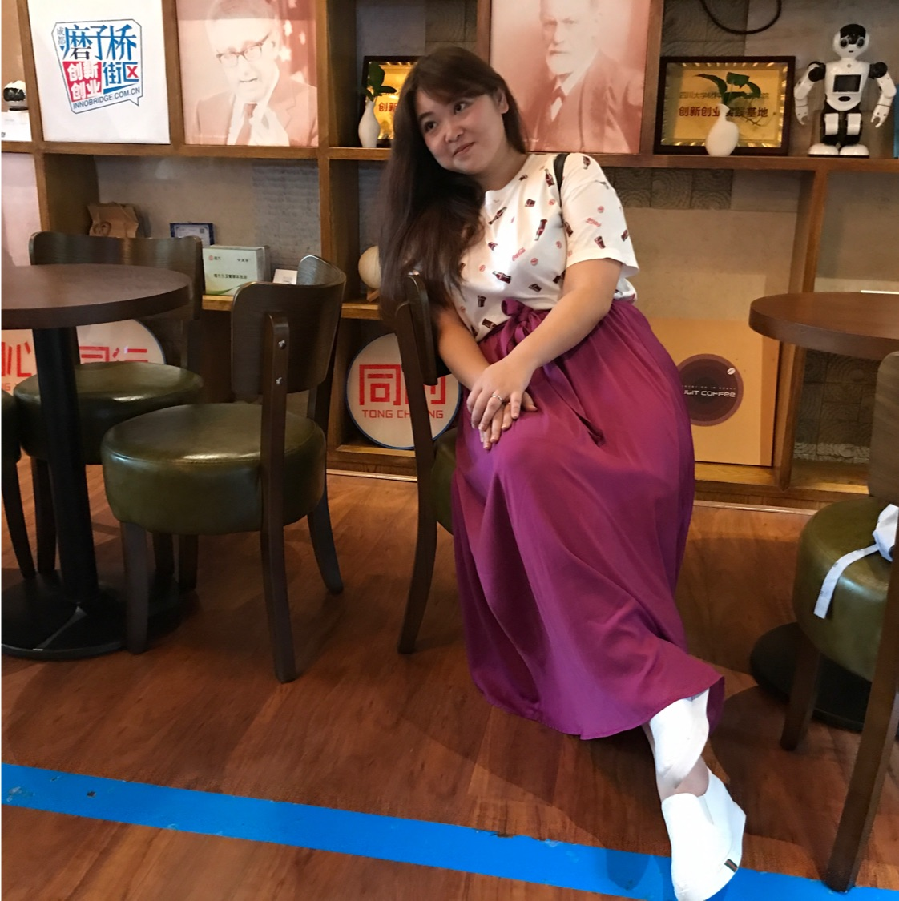

THE TEAM
The ones who runs this project

孫嘉璜
擅長
探索性資料分析、特徵工程、數據視覺化、XGBoost、LightGBM 模型建置
蔡昂叡
擅長
資料探勘與清洗、特徵工程、XGBoost 模型建置

陳宣卉
擅長
資料清理、資料分析、機器學習、資料視覺化呈現、前端網頁製作
曾欽鴻
擅長
Hadoop叢集建置與維護、機器學習、資料視覺化呈現、前端網頁製作
王立
擅長
資料清理、資料分析、機器學習、資料視覺化呈現、Hadoop 叢集建置與維護
蔡松穎
擅長
資料清洗、資料分析、HADOOP 叢集建置與維護